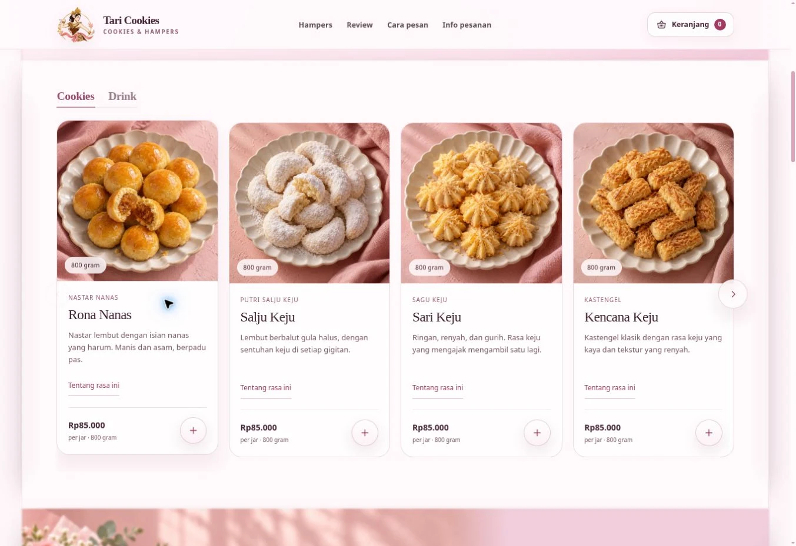
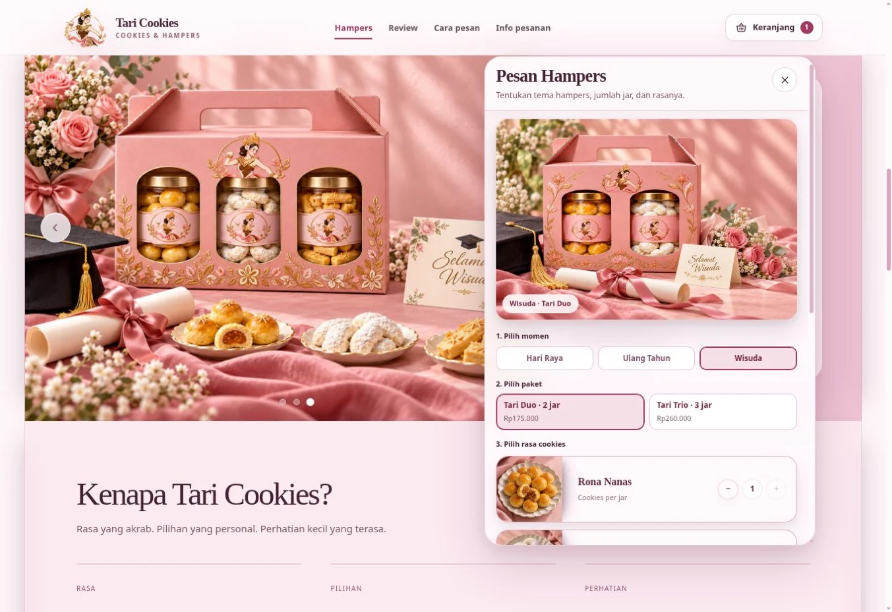
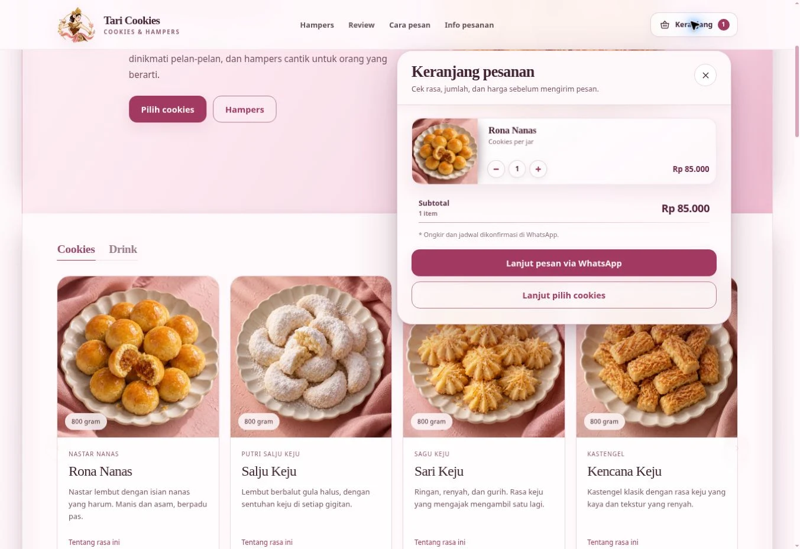

When can I get it?
Clarify ready stock, production time, and arrival expectations.
A little more clarity.
A more personal gift.
From customer questions to a working digital experience for discovering cookies, personalising hampers, and preparing an order.
Open live website
For a new buyer, an attractive product is only the beginning. They also need to understand what they can order, how pre-order works, and what happens next.
The team's exploratory research followed the journey from Instagram to WhatsApp. It brought three information needs into focus: timing, trust, and the ordering process.
Clarify ready stock, production time, and arrival expectations.
Make the brand, reviews, and payment conversation easier to understand.
Connect product discovery to a clear next step toward WhatsApp.
Research scope: 6 interview participants and 8 questionnaire responses. These exploratory inputs guided the design; they are not a representative market estimate.
I coordinated task allocation and reviewed the team's work, while developing the Lo-Fi and Hi-Fi designs and building the website.
I also prepared the final presentation, collected feedback on the website, and implemented revisions. My role connected the team's work to a tangible interface people could explore.
Use customer questions to define the information the journey needs.
Translate the direction into Lo-Fi and Hi-Fi interfaces.
Implement the website, gather feedback, and apply revisions.
The website gives product selection its own space. WhatsApp remains the place for final confirmation, with the customer's choices already organised.
Product imagery, flavour, size, price, and the add-to-cart action sit together. Cookies and drinks share a browsable catalogue, so customers can explore before opening a conversation.

Choose Hari Raya, a birthday, or graduation. Select Duo or Trio, pick the cookies for each jar, and add an optional greeting. The configuration makes the choices explicit before they reach the seller.

The cart shows selected items, quantity controls, and a subtotal. The WhatsApp handoff prepares the order details; the customer reviews and sends the message, and the seller confirms production timing and delivery fees.

The result is a live, responsive website with a product catalogue, configurable hampers, an editable cart, order information, and a WhatsApp handoff.
A useful interface connects the information a customer needs to the next decision they have to make. Building the journey helped me carry a design direction through to its implementation.
This case demonstrates the design and website output. Conversion gains and quantified usability improvements have not been measured. Final orders are confirmed by the seller; the site is not a payment gateway.
Screenshots captured from taricookies.pages.dev on 25 October 2026. Academic team project; individual responsibilities are described above.